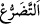
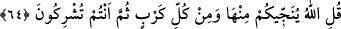
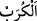
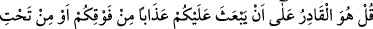
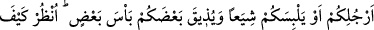
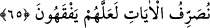

“Andolsun ki eğer bizi bundan” bu karanlık ve çetinliklerden “kurtarırsa elbette
şükredenlerden olacağız!” Bize verdiğin bu nimetlerden ötürü kararlılıkla ve daima
şükredenlerden olacağız. “diye O’na yalvarıp yakarırsınız.”
“__WORD__”; herhangi bir şeye olan şiddetli ihtiyacı, ondan yoksun oluşu ortaya
koymaktır.
Şükür, bahşedilen nimetin hakkını vererek, onu îtiraf etmektir. Allah’ın verdiği
nimetlerin hakkı da onu verene itâat etmek, asla isyan etmemektir. Nerde kaldı hiçbir
şeye gücü yetmeyen bir varlığı O’na ortak koşmak.
64. De ki: ondan ve bütün sıkıntılardan sizi Allah kurtarır. Sonra siz yine O’na
ortak koşarsınız.
Onlara “de ki: “Ondan ve bütün sıkıntılardan” kara ve denizin sıkıntılarından ve
onun dışındaki bütün sıkıntılardan “sizi Allah kurtarıyor.” “__WORD__”; kişiyi saran tüm
üzüntü ve kederlerin son haddine denir.
Böylesi eşsiz nimetlerine şâhit olduktan “sonra siz yine” de Allah’dan gayrısına
kulluk etmekte “O’na ortak koşuyorsunuz. ”
Önceki âyette geçen onların “elbette şükredenlerden olacağız.” diyerek verdikleri
söze en uygun cevap: “Sonra siz şükretmiyorsunuz, O’na kulluk etmiyorsunuz.”
denilmesidir. Ancak burada “ortak koşuyorsunuz” ifadesi, şükrü terketmenin de
doğrudan şirk koşmak gibi olduğuna dikkat çekmek için onun yerine getirilmiştir.
65. De ki: “Allah’ın size üstünüzden (gökten) veya ayaklarınızın altından
(yerden) bir azap göndermeye ya da birbirinize düşürüp kiminize kiminizin hıncını
tattırmaya gücü yeter.” Bak, anlasınlar diye âyetlerimizi nasıl açıklıyoruz!
“De ki:” şirk koşmanızın cezası olarak “O, sizin üzerinize üstünüzden bir azab
göndermeye kadirdir” Nitekim O, Nuh (a.s.)’ın kavmine böyle yapmış, onların üzerine
tufanı göndermişti. Onlardan kiminin üzerine yıldırım, kimine şiddetli fırtına ve kimine
de korkunç ses göndermişdi. Lût kavmini ve fil sahiplerini de üzerlerine taş yağdırarak
helâk etti.